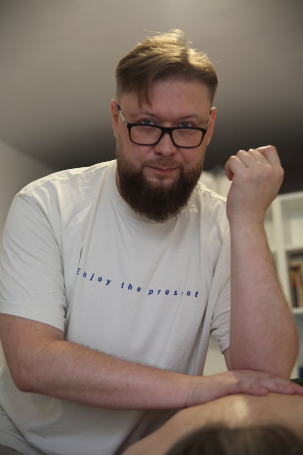
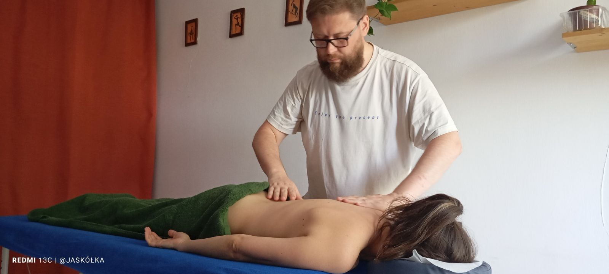
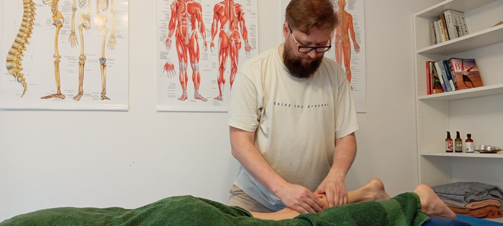

Krzysztof Kalinowski
Masaż dopasowany do Twoich potrzeb: od klasyki, przez celowaną ulgę w napięciach, po głęboki relaks z oddechem. Każda sesja z użyciem ciepłego olejku pomaga skutecznie rozpuścić napięcia i wyciszyć układ nerwowy. Wybierz swój sposób na reset i odetchnij od codzienności.

Jestem certyfikowanym masażystą i aktualnie uczestniczę w kursie nauczycielskim Somayog. W swojej praktyce łączę wiedzę z zakresu masażu z elementami Somayog oraz wybranymi elementami Techniki Alexandra. Praca z ciałem stała się moją prawdziwą pasją – to czas, w którym sam odnajduję ciszę i skupienie, a największą satysfakcję daje mi widok zrelaksowanego, uśmiechniętego klienta po zakończonej sesji.

Indywidualnie dopasowana sesja masażu ciepłym olejkiem. Skupiamy się na Twoich bieżących potrzebach i obszarach wymagających rozluźnienia.
Sesje skoncentrowane na kluczowych obszarach, w których najczęściej gromadzi się sztywność wynikająca ze stresu i siedzącego trybu życia.
Masaż relaksacyjny ciepłym olejkiem połączony ze świadomą pracą z oddechem przeponowym w celu stymulacji nerwu błędnego.
